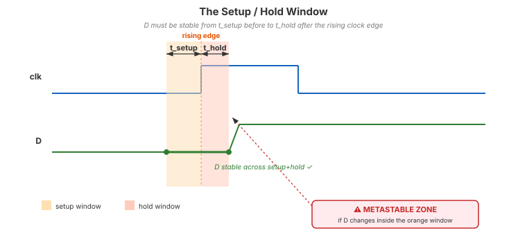
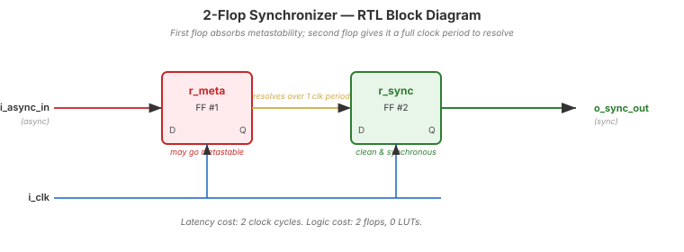
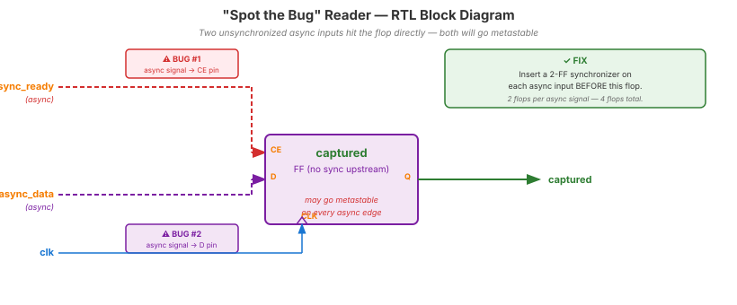

Video 3 of 4 · ~12 minutes
Dr. Mike Borowczak · Electrical & Computer Engineering · CECS · UCF
Mars Pathfinder. The 1986 Therac-25. Multiple Xilinx errata. Intel's Pentium FDIV bug had asynchronous cousins. Real silicon has failed in the real world from inadequate synchronization. Every FPGA/ASIC design guide from Intel, Xilinx, and Lattice devotes a chapter to this. Every code review at a senior RTL shop checks for missing synchronizers on asynchronous inputs.
Topic 5 button debouncer needs synchronizers (next video). Topic 11 UART RX needs synchronizers on the incoming data line. Topic 12 SPI CS needs one. Every external signal into every module for the rest of the course needs this pattern.
“Flip-flops output 0 or 1 on every clock edge. My testbench always shows clean transitions. Asynchronous inputs work fine in simulation.”
Real flip-flops have setup and hold time windows around the clock edge. If an input changes during that window, the flop's output goes into a metastable state — neither 0 nor 1 — and may oscillate, decay slowly, or resolve randomly. Simulators don't model this. Your waveform will be clean while your real chip glitches once a week.

If D changes during the setup/hold window, the flop's output becomes metastable — stuck between 0 and 1 — until it resolves (probabilistically).
module synchronizer (
input wire i_clk,
input wire i_async_in, // from external world, any timing
output wire o_sync_out // clean, synchronous to i_clk
);
reg r_meta, r_sync;
always @(posedge i_clk) begin
r_meta <= i_async_in; // first flop: may go metastable
r_sync <= r_meta; // second flop: has a full clock period to resolve
end
assign o_sync_out = r_sync;
endmodule
Does this input need a synchronizer?
module reader (
input wire clk, async_ready, async_data,
output reg captured
);
always @(posedge clk)
if (async_ready) captured <= async_data;
endmodule
Find the metastability bugs.
async_ready and async_data) are asynchronous and feed flops directly. Need synchronizers on each. Worse: using async_ready as both a clock-enable and a mux select creates a risk of capturing async_data mid-transition even if it were synchronized. Fix: synchronize both signals through 2-FF synchronizers first, then use them.
~4 minutes
▸ COMMANDS
cd lecture_examples/week2_day05/d05_s3_ex3/
make sim
make wave
make stat▸ EXPECTED STDOUT
PASS: synced follows async
with 2-cycle latency
PASS: glitches on async do
not propagate
=== 10 passed, 0 failed ===
SB_DFF: 2▸ GTKWAVE
Signals: i_async_in · r_meta · r_sync. Note: r_meta may glitch in simulation (if the TB drives pulses shorter than the clock period); r_sync is always clean. Latency is 2 clock cycles. That's the cost of safety.
Standard Verilog simulators model flops as ideal — they snap to 0 or 1 every edge. So real metastability can't be observed in a vanilla testbench. But we can emulate the consequences in several useful ways:
Drive the async input with edges placed at deliberately bad offsets — e.g., 1 ps before/after the rising clock. With non-zero #delay on the assignment, many simulators will issue a timing violation warning and the unsynchronized flop captures the old value while the synchronizer's downstream flop sees something consistent. Useful for visualizing latency, not the metastable analog state itself.
When a setup/hold violation is detected, force the flop's Q to $urandom % 2 for one cycle. This emulates the “flop resolves to either value, randomly.” Run the testbench 10,000× and watch downstream FSMs misbehave without a synchronizer — and behave correctly with one.
Drive the async input as 1'bx for one cycle around the violation point. The first flop captures X; if the design doesn't synchronize, X propagates through downstream logic and lights up the waveform. SystemVerilog's $asserton and assertion-based verification (Topic 9) make this systematic.
Post-synthesis simulation with SDF (Standard Delay Format) back-annotation and specify blocks does model setup/hold checks. Violations produce X on the flop output until the next stable edge. This is the closest free simulators get to real silicon behavior — the industry-standard pre-tapeout signoff flow.
$ yosys -p "read_verilog day05_ex03_synchronizer.v; synth_ice40 -top synchronizer; stat" -q
=== synchronizer ===
Number of wires: 4
Number of cells: 2
SB_DFF 2 ← exactly 2 flops, no frills
SB_LUT4 0(* ASYNC_REG="TRUE" *) attributes.
Ask AI: “I'm reading a button press directly into my Verilog state machine. Do I need a synchronizer? Calculate MTBF with and without one for a 25 MHz clock.”
TASK
Ask AI about sync + MTBF.
BEFORE
Predict: without sync, MTBF ~hours-days. With 2FF sync, MTBF ~centuries.
AFTER
Strong AI shows the MTBF formula. Weak AI handwaves “it's fine” — dangerous advice.
TAKEAWAY
Any AI that says “buttons don't need synchronizers” is wrong. Don't trust that model for RTL work.
① Asynchronous signals + setup/hold violations = metastability.
② The 2-FF synchronizer gives metastability time to resolve.
③ Every external input and clock-domain crossing needs one.
④ Cost: 2 flops, 2 cycles latency. Cheap insurance.
🔗 Transfer
Video 4 of 4 · ~10 minutes
▸ WHY THIS MATTERS NEXT
Synchronization handles metastability — but buttons have a second problem: they bounce mechanically for up to 20 ms. At 25 MHz that's 500,000 false edges per press. Video 4 combines the synchronizer you just saw with a counter-based debouncer to build the complete input pipeline you'll use everywhere.